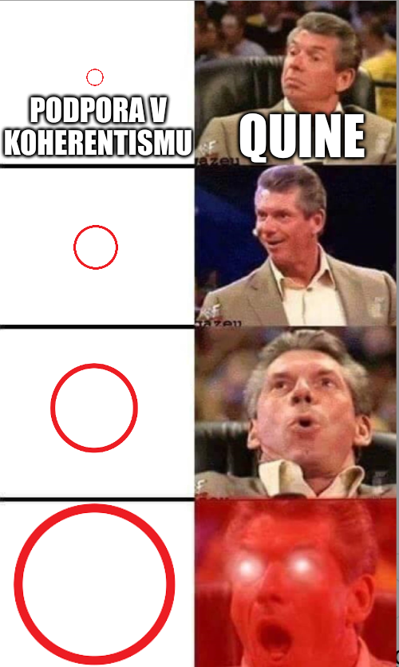

Výsledky epistemologie bývaly praktické, posledních 300 let se jedná spíše o teoretické poznání poznání. Současná epistemologie sice může vytvářet volby, ale už nemá moc je prosazovat. Neměli bychom ale podceňovat možnosti epistemologů, jsou totiž schopni měnit naše intuitivní soudy. Konkrétní situace, které známe, zažíváme nebo si představujeme jako myšlenkové experimenty, pak používají jako munici.
Epistemologie se ptá na otázky deskriptivní ("Kde se to vzalo?", "Co to je?") i normativní ("Jaké to má být?").
| Deskriptivní | Normativní |
|---|---|
| prolíná se s kognitivní psychologií | epistemická hodnota |
| jak vznikalo přesvědčení? | krásný a krásnější (estetická) → rozumný a rozumnější (epi) |
| kauzální původ | kdy vzniká hodnota jistoty, můžeme ji přenést? |
| popis jazyka: věděl nebo tušil? | jak mají vypadat systémy, které používáme? |
| klasifikační nástroje pojmové analýzy | → kdy je test průkazný, kdy máme povinnost nevědět... |
Je hodně věcí, které víme!
Máme podložené, pravdivé přesvědčení, jenže pravdivost je náhodná. Gettierovské situace útočí na dostatečnost podmínek PPP.
Funsies ohledně gettierovských situací – co když řekneme, že se pozorovatel prostě nesnažil dostatečně?
Že měl realitu víc, důkladněji zkoumat? Co když pozorování chundelaté, bílé věci na kopci nepovažujeme za dobrý důvod, pro přesvědčení?
→ gettierovské situace se přizpůcobí. Musíš přijít dřív? Well, ta ovce je ve skutečnosti hodně kvalitní replika a nejde to poznat.
Musíš ji rozřezat a vidět orgány? No, ono i ty orgány jsou hodně dobrá replika. Musíš sledovat její chování po celé měsíce?
Je naprogramovaná, aby se chovala jako ovce. A když už prozkoumáme všechno, g.s. můžou říct, že jsme mozek v kádi a žijeme v Matrixu.
A jediná cesta ven je Descartes… :)
Problém ale je, že když se snaží až moc, tak skutečně ovci vytvoří. :D
Na louce vidím bílý chundelatý tvar, který identifikuji jako ovci. Kvůli tomu začnu věřit, že na louce je ovce. JENŽE!
To, co sleduji, je jenom velký chomáč vaty, nikoli ovce.
Skutečná ovce je schovaná za keřem.
--> Mám podložené pravdivé přesvědčení, že na louce je ovce...vážně se to ale dá označit jako znalost?
Smith a Jones se ucházejí o práci.
Ředitel řekne, že přijme Jonese.
Jones má v kapse deset mincí a Smith to ví, před chvílí je přepočítával.
Smith odvozuje závěr: ředitel přijde toho, kdo má v kapse deset mincí.
Ředitel přijme Smitha.
Smith má čirou náhodou taky deset mincí v kapse, ale dosud o tom nevěděl.
--> Smith měl podložené pravdivé přesvědčení, že přijat bude ten, kdo měl v kapse deset mincí. Vážně měl znalost?
Smith je přesvědčen, že Jones vlastní Forda (na základě minulé zkušenosti).
Pak platí, že buď Jones vlastní Forda (předpokládá, že ano), nebo je Brown v Barceloně (předpokládá, že ne).
Brown je skutečně v Barceloně.
Ale Jones už Forda nevlastní.
--> Smith má PPP, že Jones vlastní Forda, nebo je Brown v Barceloně. Vážně má znalost?
Existují tři způsoby, jak se vypořádat s Gettierovskými situacemi
Jinými slovy: Ta podpora není podpora, protože se PLETE!
Jinými slovy: Ta podpora není podpora, protože DŮSLEDKY NEJSOU ZÁVISLÉ NA PODPOŘE!
Epistemický uzávěř požaduje nejen A → B, ale i ~A → ~B
Pokud tam je ovce, pak vidím ovci; pokud tam není, tak ji nevidím.
Výsledky výzkumu, že e. intuice jsou jen kulturní záležitostí, se zatím nepodařilo replikovat. :)
Podpora musí být řetězec pravdivých přesvědčení, nesmí se mezi ně vloudit nepravda.
(Funguje to v argumentaci, mohlo by to fungovat i v epistemologii…? Clakr: “ANO!” -- garbage in, garbage out)
Nesmí existovat fakt, kvůli kterému bych přesvědčení neměl/neměl pro přesvědčení podporu = takový fakt je vyvracení/vyvraceč/defeater.
Příklad?
Myšlenkový experiment: knihovna a Tom Grabit.
Z knihovny je ukradena knížka. Popis zloděje vypadá přesně jako Tom Grabit, který je navíc kleptomaniak. Máme tedy důvod se domnívat, že Tom Grabit ukradl knížku.
Defeater - vyvracení: Tomova matka říká, že Tom nekrade knížky a není kleptomaniak, všechny takové věci dělá Tomovo zlé dvojče Tim. Máme tedy důvod opustit přesvědčení, že Tom knížku ukradl.
Defeater defeateru - vyvracení vyvracení: Ukáže se, že Tomova matka je chorobná lhářka. Tento fakt vyvrací vyvracení a my máme důvod vrátit se k původnímu přesvědčení, že Tom knížku ukradl.
– obhájce a vypnutý mobil – pozor, existují případy, kdy dva fakty jsou neslučitelné (vím, že mám vypnutý mobil; vím, že mi právě volá právník),
podle definice se jedná o vyvracení, i když informace nemají spolu nic společného.
Universal defeater? Jsme mozek v kádi~
2 základní druhy fundacionalismu: karteziamismus a empirický fundacionalismus
A čím podkládáme, že základní přesvědčení mají vážně tyto vlastnosti?
Dalšími přesvědčeními!
Reakce: základní epistemická přesvědčení jsou podpořena neepistemicky (např. původem)
Reakce: nemusíme si uvědomovat, že P má vlastnosti V, stačí, když tomu tak bude → můžeme připsat znalost třeba psům
Podmínky pro dobrý systém:
Co to vůbec znamená "konzistentní?"
Alvin Platinga -- strnulý horolezec -- kdybychom zamrzli v přesvědčení o okolním světě v daném okamžiku, koherentismus by to bral jako legit
Ale byli bychom fest daleko od pravdy...
Možná revize: koherence mentálních stavů (přesvědčení + zkušenost) → jenže! to je externalistické pojetí,
ne koherentistické, kdy jediná podpora má být ve struktuře a návaznosti přesvědčení ^^
Kdybychom si vymysleli svět, který je stejně bohatý jako ten náš?
Koherentismus: welp, that's a feature, not a bug, prostě věř tomu, co funguje líp. Pokud líp funguje fikce, přijmi ji.
Možná revize: senzuálně bohaté poznatky,informace si nevycucáváme z palce
Množství informací nezajišťuje jejich kvalitu, jde o kruhovou argumentaci, opodstatňování se sám sebou...
Jediný podklad, který můžeme mít, jsou naše vlastní myšlenky, enjoy
použitelná je každá evidence, kterou již máme (nemusím se k ní dostat, stačí ji mít -- instinkt?)
aby to byla evidence, musí splňovat:
Podpora není závislá pouze na tom, co se odehrává v naší mysli, musí mít i nějakou vazbu na vnější svět
V poslední době dochází ke spojování mezi těmito dvěma směry -- Goldman
Connected true belief, jedna z reakcí na GS
Přesvědčení musí být patřičně spojeno s podporujícím faktem
Podpora musela vzniknout důvěryhodným procesem
Vytahování se do vzduchu za vlastní botu; problém laciné podpory
Smysly nám ve skutečnosti nemohou říct, co je realita. Mohou nám jen říct, co ony samy vnímají
Kant laughs in transcendental idealism
Problém zobecnění tříd
Těžko říct, do jaké kategorie zařadit informace (muži? muži nad padesát? muži nad padesát, co jsou kuřáci? kuřáci nad padesát, kterým dneska utekl pes?)
Reakce:
1. Tu quoque/parrying responses -- vždyť vy máte ten problém taky
2. Feature, not a bug!
Skepse vyvrací důvěryhodnost smyslů, lol
Brain-In-Vat scénář, Matrix,...
Možná reakce: dvojstupňový reliabilismus -- předpokládáme, že jsme v ok světě a pokud nejsme, budeme připisovat, jako bychom byli
Je možné, aby smyslové vnímání bylo podporou pro přesvědčení?